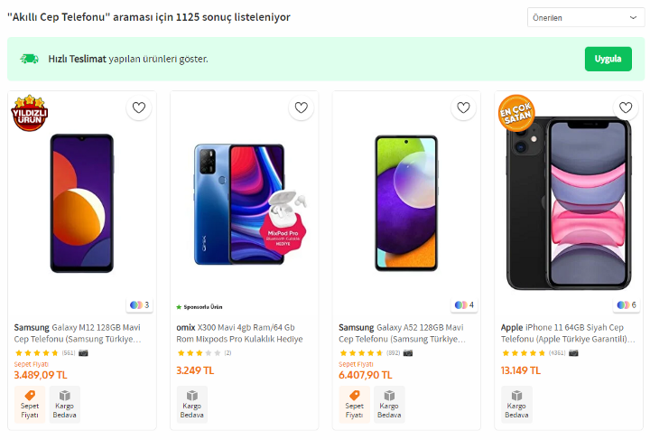

Collect, Clean and Visulize Data
Collecting, Processing, and Visualizing Data I want to share one of my little data analysis projects. I collected data about the smartphone market in Turkey to see the general situation and make deductions regarding the factors affecting the prices.
The first step is collecting data:
I collected the data from Trendyol.com, one of the most popular e-commerce retailer websites in Turkey. I utilized the BeautifulSoup library of Python programming language to get the data from the target website. The data includes over 1000 products from different brands. I was interested in smartphones, so I browsed through the categories until I reached the point where smartphones were listed. Then I inspected the page and started coding. I will not go deep with technical knowledge since this content mainly aims for presentation. You can get the data by clicking here.
The list looks like this:

I needed not only the information present on the list page but more. So I plan to collect the links for the individual product pages and get detailed information from product-specific pages. The following image is an example of a product-specific page;
Opposing the list page, I can find detailed information about the product on this page, like RAM, Storage, CPU, Screen Size, and Camera Resolution.
I wrote a couple of code lines in Python to get these features. My web scraping code looks like this;
The whole code is on Kaggle.com. You can access it here.
As I gathered information under different categories, I collected them in lists. Later I used those lists to create a Pandas Dataframe and converted the data frame into a CSV file.
The second step is data cleaning and data optimization.
After this point, data cleaning, manipulation, and optimization started. I executed these steps on Jupyter Notebook since it proposes a better user interface for such purposes.
I collected information under 12 categories I thought I needed, to extract meaningful insights.
However, the data is not in ideal shape; there are missing values and irrelevant data. Besides, it includes data in Turkish. I needed to translate them into English with code.
First, I removed the rows with missing names or brands. Because I think these parts of the rows are the most important ones for me to use.
Some data did not need to be removed entirely. Some data mixed with other values under the wrong columns, so I cleaned the dirty parts.
I uploaded the code lines I used during data processing on the same Kaggle page. Data cleaning takes a big deal of time.
After working on the data, I reached the point where I think it was good enough to extract meaning. Here is how the data looks;
I loaded the data frame on the Tableau tool, which is a data visualization tool where you can generate dynamic/live data presentations. You can see the live charts here.
I created a couple of worksheets on the tool; I compared the number of products offered to the market and the total valuation of their offerings. (The whole market refers to the data frame).
The first chart shows the number of products per brand. The second one is the evaluation of the brands in the market. These two charts show us that there is a discrepancy between the product numbers and the total worth of the products. Apple is heavily dominating the market with only 17 percent of the products listed.

Apple products obviously show a great deal of divergence with regards to price. Therefore, to make the difference more visible, I created a chart showing the prices charged by brands for each unit of RAM, CPU, and Storage. It turns out that Apple charges 2–3 times more for one unit of hardware capacity compared to its closest competitor, Samsung.

Apple products obviously show a great deal of divergence with regards to price. Therefore, to make the difference more visible, I created a chart showing the prices charged by brands for each unit of RAM, CPU, and Storage. It turns out that Apple charges 2–3 times more for one unit of hardware capacity compared to its closest competitor, Samsung.

Price seems to be in positive correlation with CPU and Storage, but it is relatively weak to explain the substantial price gap.
However, I have qualitative data that draws a clear line between these groups. The data about operating system… When I averaged the prices paid for two groups, I saw that it cuts the data frame into two just like the price gap. Price paid for an average product run by iOS is almost 4 times more.
For confirmation, I applied the one-hot encoding method to the data and calculated the correlation of the operating systems. The correlation is, as expected, very strong;
Besides that, I generated the correlation chart only for the products running on the same OS to eradicate the effect of the dominant impact of the operating systems and the hardware difference started making sense. The hardware correlation greatly increased within the Apple products. This situation shows that the operating system is the more prominent factor than hardware capacity for price determination, overshadowing every other variable.
On the other hand, the only iOS user brand is Apple; it is crucial not to neglect the possibility that Apple’s brand value pushes the prices up but not the operating system. I do not have enough data to measure the brand value of Apple. I still can derive a counter hypothesis against that statement.
If we test this hypothesis from the negative approach, which means checking the prices among the products run by Android but offered by different brands, we could conclude that the brand value does not matter much among the products run by Android. The prices with the same hardware lurk in the same range, even if the brand value varies greatly.
To conclude, iOS claims superiority over Android in the eyes of users in Turkey. The UX, the UI, or the design offered by iOS might be making the difference. We could refer to iOS as a competitive advantage for Apple. Focusing on software development and differentiating the products in this regard looks more profitable than lowering the costs of tangible materials.
In other words, developing better software is another way to create efficiency, in this case, which means offering a higher perceived value to the customer by using the same or similar material. The competition level reaches the sky when it comes to intangible assets like software. Therefore, the profitability and price for that asset are determined accordingly. This data frame shows that businesses should allocate more resources for software development.